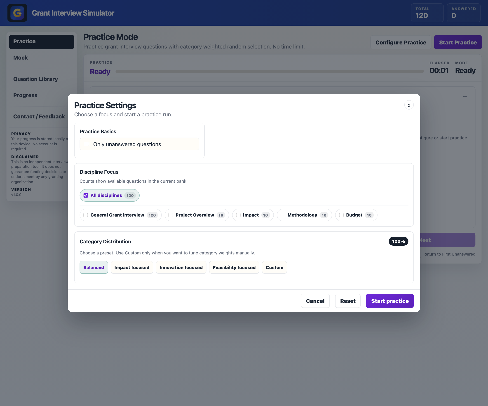
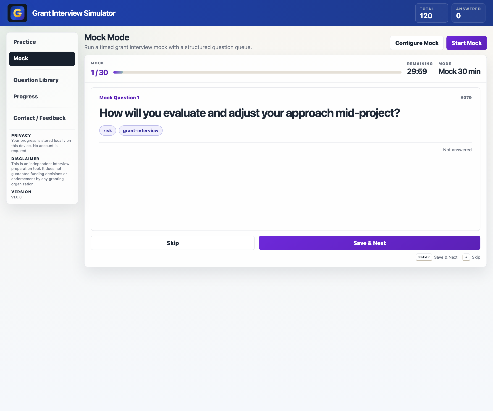
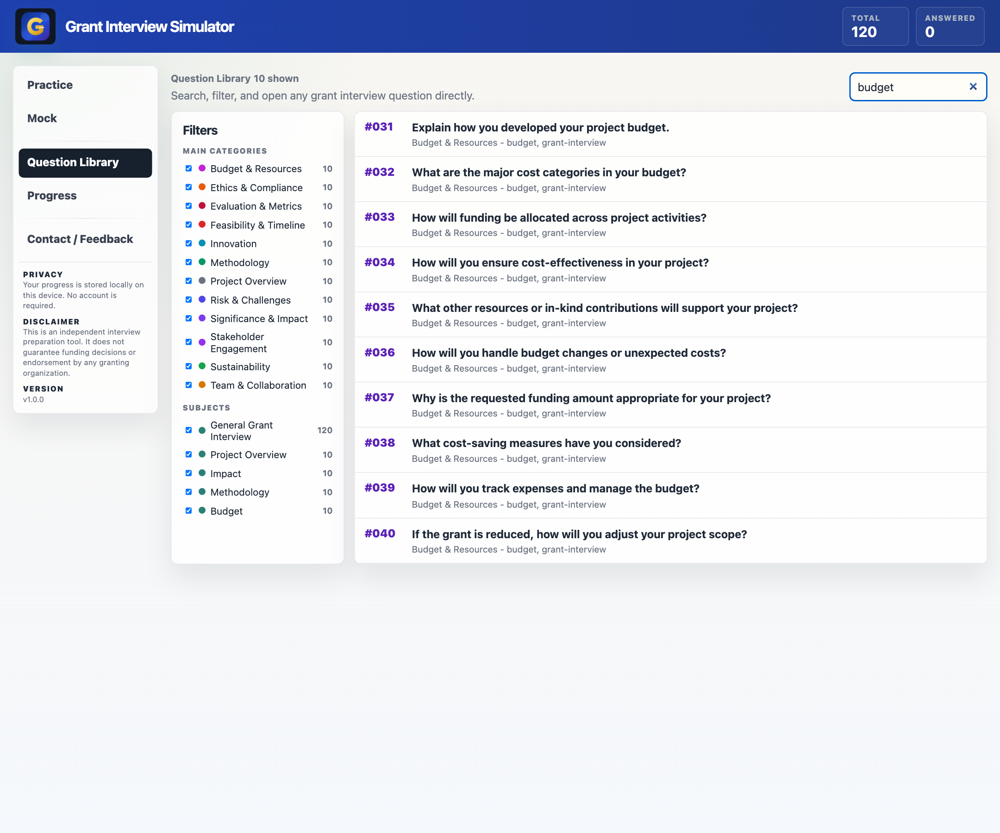
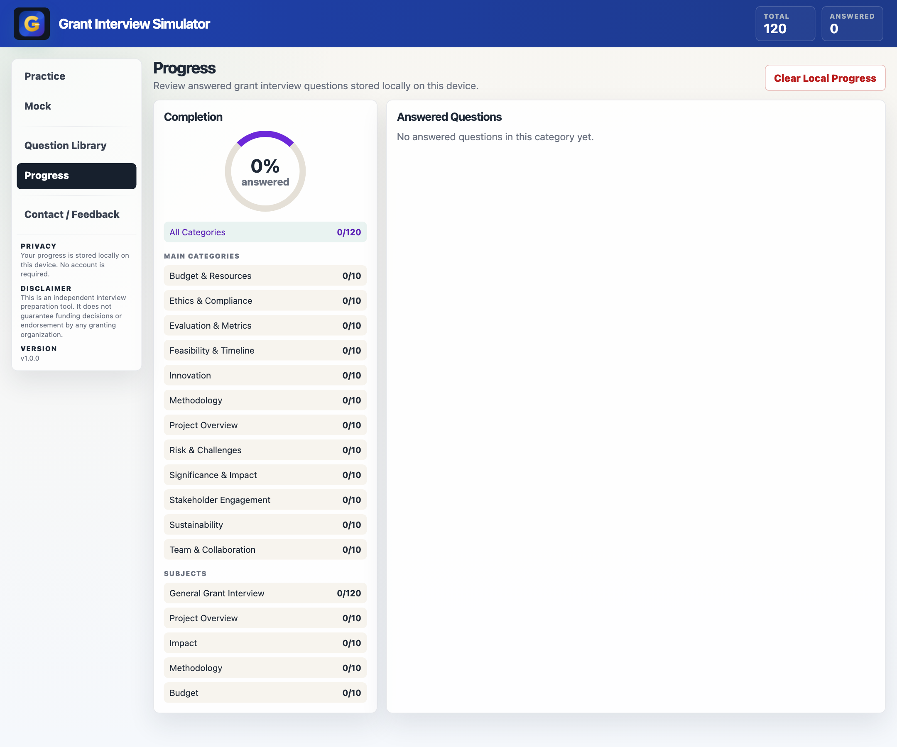

120 prompts
The full version covers project overview, impact, methodology, budget, feasibility, risk, sustainability, ethics, and evaluation.
Built for applicants who need to explain project goals, impact, methodology, budget, risk, and evaluation more clearly before funding interviews.
Buy Full VersionThe full version covers project overview, impact, methodology, budget, feasibility, risk, sustainability, ethics, and evaluation.
Run timed funding interview practice with focused question flow and repeatable rehearsal.
Use Purpose, Approach, Impact, and Timeline prompts to keep answers clear, logical, and panel ready.
Revisit weaker areas like budget justification, methodology, or evaluation before your next interview.
These screenshots show the configured Grant Interview app experience, including structured practice, focused question review, and local progress tracking.




The landing page includes a free 10 question sample. The full product expands this into a 120 question grant interview practice set.
Key details about the Grant Interview Simulator configuration.
It is built for applicants preparing for grant, funding, proposal, and panel-style interviews where they need to explain goals, methods, impact, and delivery clearly.
The bank covers project overview, significance and impact, methodology, budget and resources, feasibility, team roles, innovation, risk, sustainability, ethics, stakeholder engagement, and evaluation.
The default answer guidance uses the PAIT structure: Purpose, Approach, Impact, and Timeline.
No. The product description states that progress is stored locally on the device and no account is required.